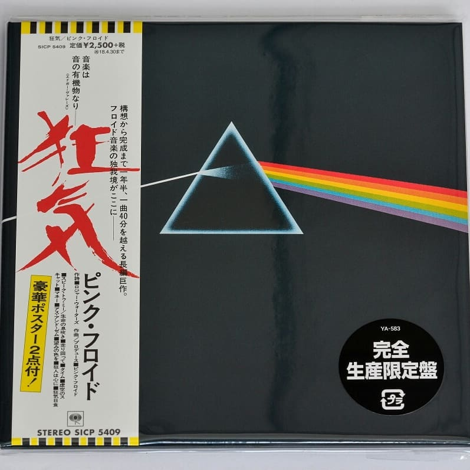

Pink Floyd / The Dark Side Of The Moon Japan Mini LP CD Limited Release 🔝 - 1850 рублей
100% ORIGINAL JAPAN RELEASE MINI LP CD
Catalog No. SICP-5409
JAN/ISBN: 4547366312669
Product Type CD
Number of Discs 1
Tracklisting
1.Speak To Me
2.Breathe (In The Air)
3.On The Run
4.Time
5.The Great Gig In The Sky
6.Money
7.Us And Them
8.Any Colour You Like
9.Brain Damage
10.Eclipse
Cardboard sleeve reissue release from Pink Floyd features 2011 remastering. The mini LP faithfully replicates its original UK LP design. Includes an obi faithfully replicating the one with its Japan first pressing edition. Comes with lyrics and a description.